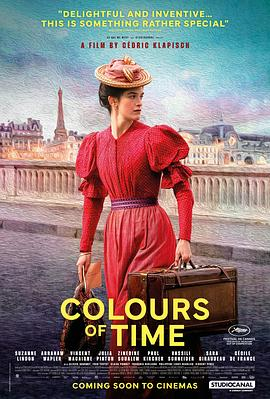

7.6
从前的光景
La venue de l’avenir
2025
法国
评分 7.6
导演:
塞德里克·克拉皮斯
演员:
苏赞妮·林顿 / 亚伯拉罕·瓦普莱 / 樊尚·马凯涅 / 茱莉亚·皮亚彤 / 齐内丁·苏阿莱姆 / 保罗·基尔舍 / 瓦西里·施耐德
类型:
剧情,喜剧,爱情
剧情简介
诺曼底的秋天，薄雾笼罩着一栋古老的乡间别墅。表兄妹加布里埃尔（苏赞妮·林顿 饰）与安托万（亚伯拉罕·瓦普莱 饰）在祖母去世后继承了这处早已荒废的房产。翻修过程中，他们在阁楼发现一份被尘封的家谱和一本十九世纪的日记——纸页泛黄，却藏着一段几乎被时间吞没的爱情。影片以双线叙事展开：一边是当下的翻修与重逢，一边是十九世纪巴黎的记忆重现。加布里埃尔在翻阅祖先信件时，仿佛听到远处传来的马车声，镜头一转，十九世纪的巴黎街景跃然而出——画师阿尔芒（樊尚·马凯涅 饰）与贵族小姐艾洛伊丝（茱莉亚·皮亚彤 饰）在动荡年代相爱，终究被阶级与命运拆散。导演塞德里克·克拉皮斯以他惯常的温柔节奏与细腻情感，让现实与记忆交织成一场关于“家族、爱与时间”的旅程。窗外的雨声、阁楼的木质气味、翻动书页的轻响，共同构成影片的“时间质感”。现代的加布里埃尔与安托万在解谜的过程中，也逐渐面对自己早已被压抑的情感——原来，他们继承的不只是房产，还有一份未竟的故事。影片中处处是法式的浪漫隐喻：光线透过破碎玻璃洒在灰尘上，像时间留下的残影；古董留声机的旋律贯穿全片，将过去与现在温柔连接。克拉皮斯通过轻喜剧的笔触化解怀旧的沉重，让观众在笑与叹之间感受到时间的温度。当房子最终修复、画作重现光亮，加布里埃尔轻声说道：“也许过去并没有远去，只是换了一种方式活在我们身上。”这一句温柔收尾，将整部电影的主题升华——有些故事不会结束，只会被重新讲述。